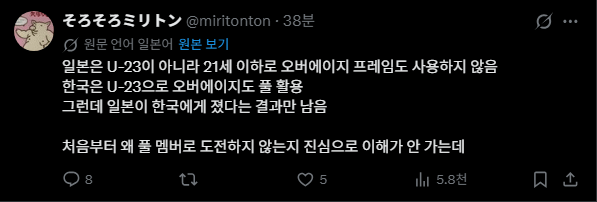

병역문제 없는 일본은
체계적으로 활성화 되어있는
유소년 시스템과 J 리그로
축구가 매년 발전하고 있고
한국보다 더 유럽으로 선수들을
보내고 있어서 해외파들로 드글한데
이웃 나라 한국은
병역문제때문에 다들 끙끙 거리고있으니
이를 딱하게 여겨서 4년마다 병역면제를 선물로줌
다음에도 부탁드립니다

병역문제 없는 일본은
체계적으로 활성화 되어있는
유소년 시스템과 J 리그로
축구가 매년 발전하고 있고
한국보다 더 유럽으로 선수들을
보내고 있어서 해외파들로 드글한데
이웃 나라 한국은
병역문제때문에 다들 끙끙 거리고있으니
이를 딱하게 여겨서 4년마다 병역면제를 선물로줌
다음에도 부탁드립니다
군면제 선물을 때문에 진짜뭐 뒷돈준거아니냐 ㅋㅋㅋ
1군 싸움 하면 우리가 진다 나오지 마
아리가토
쟤네도 거의 풀전력임. 2년뒤 기량유지하면 올림픽에 쟤네 거의다 포함해서 나올걸.
항상 그랬음 아시안게임 -> 올림픽 스쿼드 유지
18년 라인업보면 미토마,토미야스,마에다 이런 지금 일본 국대인애들 다포함임
그니까 저런 시스템 인프라를 갖춰놓은게 대단한거.. 일본축구는 지금이 고점일수기없음 쭉 우상향 할수빆에없는 구조임 ㄷㄷ;
니넨 애초에 아시안게임 스쿼드 그대로 올림픽 u23까지 보낸다는 생각으로 뽑으니 21세 이하로만 구성하는거잖아 병신새끼들아
접대컵 개꿀
이왕 유망주 키우는거 화끈하게 U-17로 보내줬으면
글고 야구 대표도 사회인 말고 청대로 보내라
아겜 니들한테 좆도 안중요하대매 ㅇㅇㅇㅇ
근데 축구 유망주를 왜 세금으로 키우는데?
재네들은 생활 체육아님?
누가 년간 2천억 넣어서 월드컵 16강도 못가는 팀만드냐?
일본도 엘리트 체육으로 노선바꾼지 좀 됐는데...?
일본이 그짓을 수십년동안 했는데?
응? 세금이라면 일본 축구도 만만치 않게 먹긴 한데...
한국은 세금을 그냥 지자체구단 소속 애들 연봉이라는 이름으로 허공에 쳐날리니까 문제인거지
얘들 하도 스포츠 개발리니까 국가에서 이 악물고 스포츠청이라는 독자 행정기관 만들어서 돌리는 중임. 우리로 치면 문화체육관광부에서 체육 관련 부서 빼서 체육청 만든 격임.
나는 이새끼처럼 우리만 엘리트스포츠고 다른나라는 다 생체하고 취미로 운동하는 사란이 올림픽 나온다, 왜 우리는 엘리트스포츠인데 생체에 지냐 이딴 븅신같은 생각하는 애들의 뇌가 존나 궁금함.
이번 야구에서 그놈의 사회인 야구타령하는 새끼들도 마찬가지지만 취미로 운동하는데 도대체 어떻게 세계대회에서 입상을 하고 메달을 땀? 그럼 그 취미로 하는 사람이 각잡고 엘리트운동하면 아주 씨발 세계 기록 다깨고 염병을 하겠지.
상무가 리그우승하면 와 군인팀이 프로를 이기네 ㄷㄷ 하는꼴이랑 뭐가 다르냐
그럼 19살에 준비한다는거?
온갖 호들갑은 다 떨지만 올림픽 60년째 노메달
뭐? 올림픽도 월드컵 시험대라고? 응 월드컵 16강딱 ㅋㅋ
군대는 빼줄 수 있을 때 빼주는게 맞아
고맙다. 계속 잘 부탁한다..
왜 사회인 축구단이라 그러지
제발 유지해주라 전설의 1군은 꺼내지마